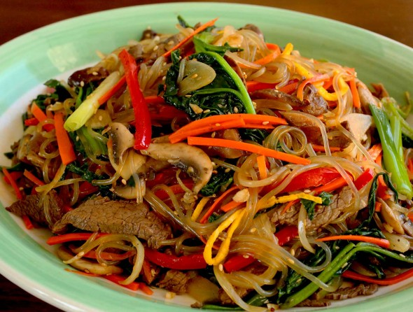

Japchae

Description
Japchae was one of my favorite home-cooked dishes in Korea. My neighbor brought some to me on any holiday and made me feel welcome so now Japchae always gives me a nostalgic feeling.
Check out the original recipe.
Ingredients
- For sauce:
- 1/4 c. soy sauce
- 3 tbsps brown sugar
- 1/2 - 1 tsp ground black pepper
- 5 garlic gloves, minced
- For noodles, vegetables, and mushrooms:
- 8 oz sweet potato starch noodles, soaked for at least 40 minutes
- 8 dried wood ear mushrooms, washed and soaked for at least 30 minutes
- 8 oz king oyster mushrooms, sliced into long strips
- 1 large onion, sliced
- 1 large carrot, peeled and cut into matchsticks
- 8 oz bunch spinach
- 1/4 c. vegetable oil
- 1 tbsp + 1 tsp toasted sesame seeds
- 1 tbsp toasted sesame oil
Steps
- Combine the soy sauce, brown sugar, black pepper, and garlic in a bowl and mix well with a spoon until the sugar is dissolved. Set aside.
- Drain the wood ear mushrooms and cut into bite-size pieces, discarding the touch stems and put into the pot.
- Add other mushrooms, carrot, and onion to the pot.
- Add vegetable oil and 1/4 cup water to pot. Mix well so vegetables are coated in oil.
- Drizzle sauce on top of noodles and cover and cook for 10 minutes over medium-high heat.
- Stir and toss for 1-2 minutes until liquid has evaporated and noodles are nicely cooked and shiny.